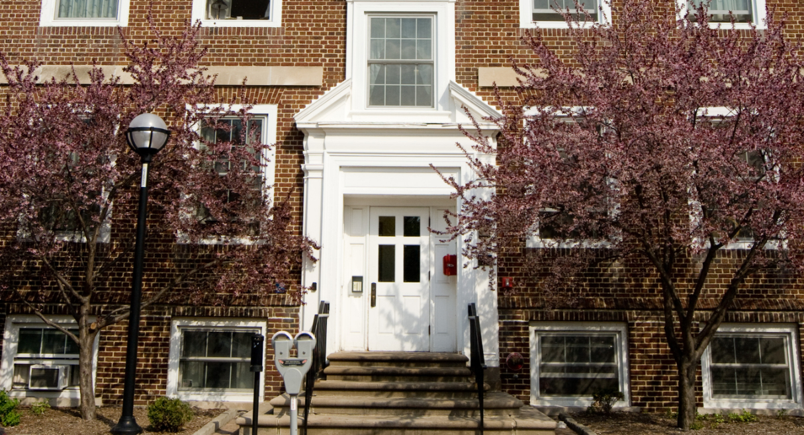

Who Are We?
We're here to make sure that every student has easy access to delicious, healthy food and the tools to prepare it for themselves or others!
How does it work? Shopping at the Maize & Blue Cupboard is only available by appointment. To schedule a visit, sign up here.
What Do We Offer?
We understand that many college students and staff are facing food insecurity, and the Maize and Blue Cupboard is here to help the U-M community. We provide food, learning opportunities, and support to help students make smart choices and gain useful skills.
- Food
- Kitchen and Cooking
- Personal & Household
- Support
Where Can You Find Us?
Location & Hours
We are located in the basement of the Betsy Barbour Residence Hall. Please enter via the Maynard entrance to respect the privacy of our residents. Contact us at 734-936-2794 if you need any help!
Address: 420 S State St Ann Arbor, MI 48109
To schedule a visit, sign up here.
